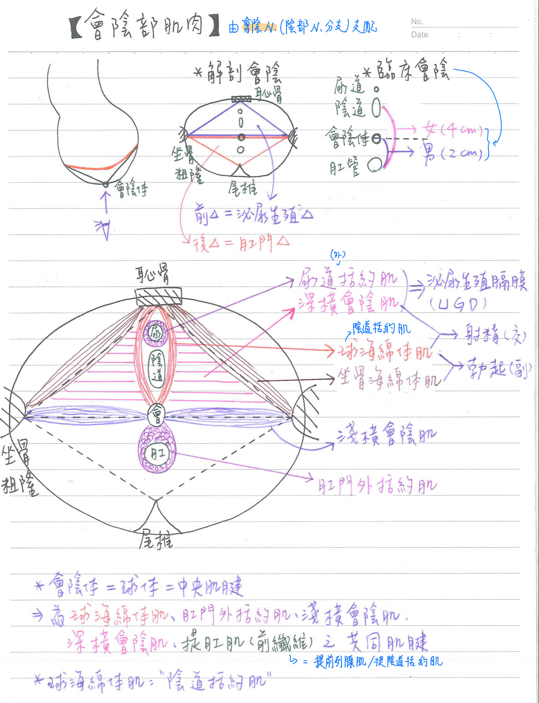
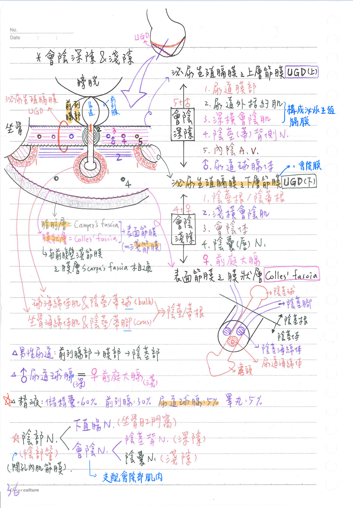
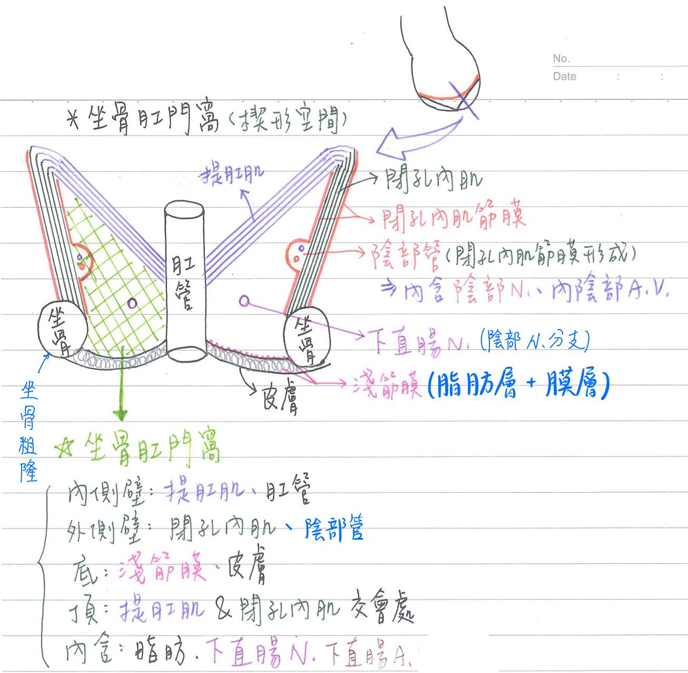

💪🏼 肌肉系統：會陰部肌肉[考題多]
會陰(perineum)：軀幹骨盆膈膜以下之區域
- 解剖會陰：由坐骨粗隆連線之前後兩三角形組成
- 前△=泌尿生殖 (urogenital △)：坐骨粗隆連線至恥骨聯合
- 後△=肛門(anal △)：坐骨粗隆連線至尾骨端
- 臨床會陰：
- 男 ：肛門至會陰體之間(約 2cm)
- 女：肛門至陰道之間(約 4cm)
- ★會陰體(perineal body) =球體 (bulb) = 中央肌腱 (central tendon)：[hint：深淺外提球]
- 軀幹最低點
- ★深橫會陰肌、淺橫會陰肌、肛門外括約肌、提肛肌(前纖維=提前列腺肌)、球海綿體肌 等之共同肌腱附著點
會陰部相關肌肉
- 由★[110-1延伸]會陰N(perineal n；陰部N分支)支配
- ★泌尿生殖膈膜(urogenital diaphragm, UGD)/會陰深筋膜：深橫會陰肌+ 尿道外括約肌
- 球海綿體肌(bulbospongiosus)：有陰道括約肌之稱
- 因性別而位置不同(男：左右合一；女：分成左右)
- 坐骨海綿體肌(ischiocavernosus)
- 球海綿體肌及坐骨海綿體肌：可強化男性★[110-1]勃起(erection)
- 深橫會陰肌及球海綿體肌：可強化男性射精(ejaculation)

(重點)會陰深隙(deep perineal pouch/ space/ compartment)
- 上界= 泌尿生殖膈膜之上層筋膜(superior fascial layer of UGD)
- 下界= 泌尿生殖膈膜之下層筋膜(inferior fascial layer of UGD)= ★會陰膜
- 內含：
- 尿道膜部 (membranous urethra)
- ★★尿道外括約肌(external sphincter of urethra)
- 深橫會陰肌(deep transverse perineal m.)
- 內陰A/V.(int. pudendal vessels)
- ★陰莖/陰蒂背側N.( dorsal n.of penis / clitoris)
- ★★尿道球腺體(bulbourethral gland)[男性，較深]：提供5%精液
會陰淺隙(superficial perineal pouch/ space/ compartment)
- 上界：泌尿生殖膈膜之下層筋膜(inferior fascial layer of UDG) =★會陰膜
- 下界：表面筋膜之膜狀層(membranous layer of sf. fascia)= Colles fascia
- 表面筋膜(=淺筋膜) (superfial fascia)：
- 脂肪層(fatty layer)= Camper's fascia : 與ischeorectal fossa脂肪相通
- 膜狀層(membranous)= Colles' fascia：與前腹壁筋膜之膜層(Scarpa's fascia)相通
- 表面筋膜(=淺筋膜) (superfial fascia)：
- 內含：
- ★★陰莖/陰蒂根(root of penis / clitoris)：
- ★陰莖/前庭球(bulb) &★球海綿體肌(bulbospinousus m.)
- 陰莖/陰蒂腳(crus) & ★★坐骨海綿體肌(ischiocavernosus m.)
- ★淺橫會陰肌(superficial transverse perineal m.)
- 會陰體(perineal body)
- 後陰囊/陰唇A (post. scrotal/labial a.)：內陰A分枝
- 後陰囊/陰唇N(post. scrotal/ labial n.)：會陰N分枝
- ★★前庭大腺(vestibular gland) [女性，較淺]
※尿道球腺體(bulbourethral gland)[男性，在深隙]=前庭大腺(vestibular gland) [女性，在淺隙]
- ★★陰莖/陰蒂根(root of penis / clitoris)：

[必考]坐骨肛門窩(ishioanal=ischioorectal fossa)一楔形空間
- 邊界：
- 內側壁：★提肛肌、肛管
- 外側壁：★★閉孔內肌；★★外側壁具陰部管
- 底(base)：淺筋膜和皮膚
- 頂(apex)：內側壁與外側壁交會處
- 內含：
- 豐富脂肪
- 下直腸N
- 下直腸A
- 陰部管
- [重點]陰部管(pudendall canal= Alcock canal)：位坐骨肛門窩之外側壁
- 由★閉孔內肌筋膜形成
- ★★內含陰部N及內陰部A/V
- [重點] 陰部N(pudendal n.)：位於陰部管→可分出
- 下直腸N(inferior rectal n.)：位坐骨肛門窩
- 會陰N(perineal n.)—> 後陰囊/陰唇N(會陰淺隙) + 背陰莖/陰蒂N(會陰深隙)
